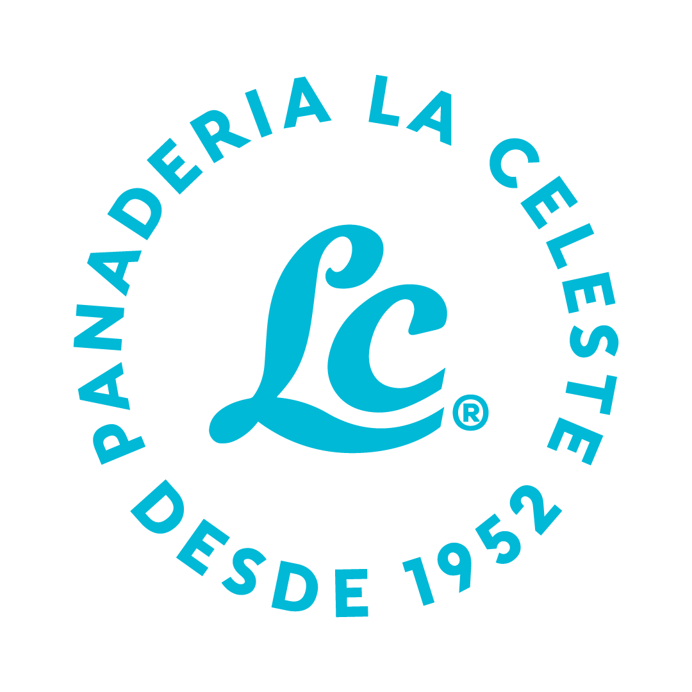

Plan Control
Cruce entre lo pedido en el plan y lo realizado según la app del orden y el pedido (ej.: bolsas de criollo pedidas vs. hechas).
Sin link aún

Panadería La Celeste
Accesos a las herramientas de control diario